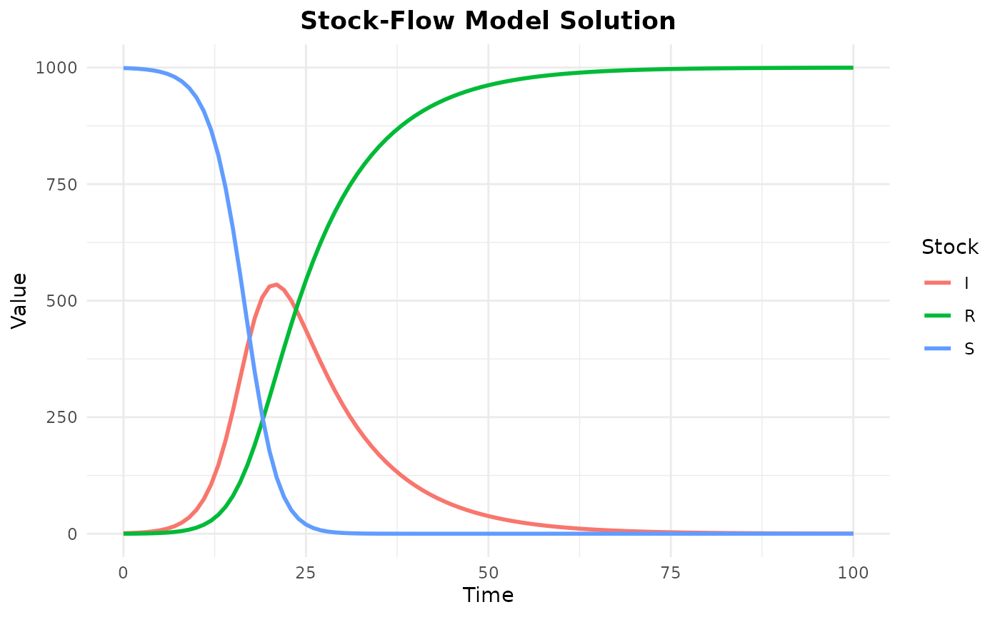

Introduction
One of the key advantages of the categorical approach to stock-flow modeling is the ability to compose complex models from simpler components. This vignette demonstrates how to build models compositionally using decorated cospans and pushout operations.
What is Composition?
Composition allows you to:
- Build complex systems from simpler, reusable components
- Connect models through shared interface stocks
- Maintain mathematical rigor through categorical operations
- Ensure that composed models have well-defined semantics
Mathematical Foundation
Composition is based on the categorical pushout operation. When you compose two diagrams through a shared interface, the system:
- Takes the disjoint union of both diagrams
- Identifies (glues together) the stocks in the interface
- Preserves all flows from both diagrams
- Maintains the categorical structure
Converting to Open Diagrams
Before composition, diagrams must be converted to “open” form by specifying which stocks are exposed as interfaces.
# Create a simple diagram
tank <- stock_flow_diagram() %>%
add_stock("Water", initial = 100) %>%
add_stock("Spillage", initial = 0) %>%
add_flow("leak",
from = "Water",
to = "Spillage",
rate = function(inputs, params) params$leak_rate * inputs$Water
)
# Expose "Water" as a right interface (can be composed on the right)
open_tank <- as_open_diagram(tank, right_interface = "Water")
# You can also specify both left and right interfaces
open_tank_both <- as_open_diagram(tank,
left_interface = "Water",
right_interface = "Spillage"
)Simple Composition: Connected Tanks
Let’s compose two tank models to create a connected system.
# Left tank: water flows in and can flow to the right
left_tank <- stock_flow_diagram(reset_ids = TRUE) %>%
add_stock("Tank1", initial = 100) %>%
add_flow("inflow",
from = NULL, # External inflow
to = "Tank1",
rate = function(inputs, params) params$inflow_rate
)
# Right tank: receives water from the left
right_tank <- stock_flow_diagram(reset_ids = TRUE) %>%
add_stock("Tank2", initial = 50) %>%
add_flow("outflow",
from = "Tank2",
to = NULL, # External outflow
rate = function(inputs, params) params$outflow_rate * inputs$Tank2
)
# Create a connecting flow
connector <- stock_flow_diagram(reset_ids = TRUE) %>%
add_stock("Tank1", initial = 100) %>%
add_stock("Tank2", initial = 50) %>%
add_flow("transfer",
from = "Tank1",
to = "Tank2",
rate = function(inputs, params) params$transfer_rate * inputs$Tank1
)
# Compose: left_tank with connector via Tank1
left_open <- as_open_diagram(left_tank, right_interface = "Tank1")
connector_open1 <- as_open_diagram(connector,
left_interface = "Tank1",
right_interface = "Tank2"
)
step1 <- compose(left_open, connector_open1)
# Compose: result with right_tank via Tank2
connector_open2 <- as_open_diagram(right_tank, left_interface = "Tank2")
final_system <- compose(step1, connector_open2)
# Close to get the complete diagram
complete_system <- close_diagram(final_system)
# The complete system has all three stocks and all three flows
cat("Stocks:", n_stocks(complete_system), "\n")
#> Stocks: 2
cat("Flows:", n_flows(complete_system), "\n")
#> Flows: 3SIR Model Composition
A powerful use case is building epidemic models by composing transmission and recovery processes.
# Transmission process: S -> I
transmission <- stock_flow_diagram(reset_ids = TRUE) %>%
add_stock("S", initial = 999) %>%
add_stock("I", initial = 1) %>%
add_flow("infection",
from = "S",
to = "I",
rate = function(inputs, params) {
params$beta * inputs$S * inputs$I / (inputs$S + inputs$I)
}
)
# Recovery process: I -> R
recovery <- stock_flow_diagram(reset_ids = TRUE) %>%
add_stock("I", initial = 1) %>%
add_stock("R", initial = 0) %>%
add_flow("recovery",
from = "I",
to = "R",
rate = function(inputs, params) params$gamma * inputs$I
)
# Compose via shared stock "I"
sir <- compose(
transmission,
recovery,
interface = "I"
)
# Close and solve
sir_closed <- close_diagram(sir)
# The composed model has the correct structure
cat("SIR model stocks:", stock_names(sir_closed), "\n")
#> SIR model stocks: S I R
cat("SIR model flows:", flow_names(sir_closed), "\n")
#> SIR model flows: infection recovery
# Solve the composed model
result <- solve_diagram(
sir_closed,
times = seq(0, 100, by = 1),
params = c(beta = 0.5, gamma = 0.1)
)
# Plot the result
plot_solution(result, title = "Composed SIR Model")
#> Warning: Using `size` aesthetic for lines was deprecated in ggplot2 3.4.0.
#> ℹ Please use `linewidth` instead.
#> ℹ The deprecated feature was likely used in the openstockflow package.
#> Please report the issue at
#> <https://github.com/ianmoran11/openstockflow/issues>.
#> This warning is displayed once every 8 hours.
#> Call `lifecycle::last_lifecycle_warnings()` to see where this warning was
#> generated.
Flow Rate Merging
When multiple flows connect to the same interface stock, their rates are automatically summed.
# Two sources flowing into a shared reservoir
source1 <- stock_flow_diagram(reset_ids = TRUE) %>%
add_stock("Source1", initial = 100) %>%
add_stock("Reservoir", initial = 0) %>%
add_flow("flow1",
from = "Source1",
to = "Reservoir",
rate = function(inputs, params) params$rate1
)
source2 <- stock_flow_diagram(reset_ids = TRUE) %>%
add_stock("Source2", initial = 100) %>%
add_stock("Reservoir", initial = 0) %>%
add_flow("flow2",
from = "Source2",
to = "Reservoir",
rate = function(inputs, params) params$rate2
)
# Compose via shared "Reservoir"
combined <- compose(source1, source2, interface = "Reservoir")
combined_closed <- close_diagram(combined)
# The reservoir receives both flows
# dReservoir/dt = rate1 + rate2
ode_func <- generate_ode(combined_closed)
state <- initial_state(combined_closed)
params <- c(rate1 = 5, rate2 = 3)
# At t=0, dReservoir/dt = 5 + 3 = 8
deriv <- ode_func(0, state, params)
reservoir_idx <- which(stock_names(combined_closed) == "Reservoir")
cat("dReservoir/dt =", deriv[[1]][reservoir_idx], "(expected: 8)\n")
#> dReservoir/dt = 8 (expected: 8)Associativity: Chaining Compositions
Composition is associative, meaning you can compose multiple diagrams in any order.
# Create three simple diagrams
a <- stock_flow_diagram(reset_ids = TRUE) %>%
add_stock("X", initial = 10) %>%
add_stock("Y", initial = 0)
b <- stock_flow_diagram(reset_ids = TRUE) %>%
add_stock("Y", initial = 0) %>%
add_stock("Z", initial = 0)
c <- stock_flow_diagram(reset_ids = TRUE) %>%
add_stock("Z", initial = 0) %>%
add_stock("W", initial = 0)
# Compose left-to-right: (A ∘ B) ∘ C
# Use explicit open diagrams to control interfaces
a_open <- as_open_diagram(a, right_interface = "Y")
b_open1 <- as_open_diagram(b, left_interface = "Y", right_interface = "Z")
ab <- compose(a_open, b_open1)
c_open1 <- as_open_diagram(c, left_interface = "Z")
abc_left <- compose(ab, c_open1)
# Compose right-to-left: A ∘ (B ∘ C)
b_open2 <- as_open_diagram(b, left_interface = "Y", right_interface = "Z")
c_open2 <- as_open_diagram(c, left_interface = "Z")
bc <- compose(b_open2, c_open2)
a_open2 <- as_open_diagram(a, right_interface = "Y")
abc_right <- compose(a_open2, bc)
# Both result in the same structure (up to ID renaming)
cat("Left association stocks:", n_stocks(close_diagram(abc_left)), "\n")
#> Left association stocks: 4
cat("Right association stocks:", n_stocks(close_diagram(abc_right)), "\n")
#> Right association stocks: 4Design Patterns for Reusable Components
Pattern 1: Stratified Models
Create age-stratified models by composing identical structures for each age group.
# Function to create a single age group
create_age_group <- function(age_name, initial_S, initial_I) {
stock_flow_diagram(reset_ids = TRUE) %>%
add_stock(paste0("S_", age_name), initial = initial_S) %>%
add_stock(paste0("I_", age_name), initial = initial_I) %>%
add_stock(paste0("R_", age_name), initial = 0) %>%
add_flow(paste0("infection_", age_name),
from = paste0("S_", age_name),
to = paste0("I_", age_name),
rate = function(inputs, params) {
# Age-specific transmission rate
params[[paste0("beta_", age_name)]] *
inputs[[paste0("S_", age_name)]] *
inputs[[paste0("I_", age_name)]]
}
)
}
# Create age groups
children <- create_age_group("child", 1000, 10)
adults <- create_age_group("adult", 2000, 5)
# These can be composed or analyzed separatelyPattern 2: Modular Interventions
Build intervention components that can be added to base models.
# Base SIR model
base_sir <- stock_flow_diagram(reset_ids = TRUE) %>%
add_stock("S", initial = 999) %>%
add_stock("I", initial = 1) %>%
add_stock("R", initial = 0) %>%
add_flow("infection",
from = "S",
to = "I",
rate = function(inputs, params) {
params$beta * inputs$S * inputs$I / (inputs$S + inputs$I + inputs$R)
}
) %>%
add_flow("recovery",
from = "I",
to = "R",
rate = function(inputs, params) params$gamma * inputs$I
)
# Vaccination intervention (moves S -> R directly)
vaccination <- stock_flow_diagram(reset_ids = TRUE) %>%
add_stock("S", initial = 999) %>%
add_stock("R", initial = 0) %>%
add_flow("vaccination",
from = "S",
to = "R",
rate = function(inputs, params) {
params$vax_rate * inputs$S
}
)
# Compose to add vaccination to the model
sir_with_vax <- compose(
base_sir,
vaccination,
interface = c("S", "R")
)Summary
Compositional modeling with openstockflow enables:
- Modularity: Build complex models from simple, reusable components
- Mathematical rigor: Composition follows categorical laws (associativity, identity)
- Flow merging: Automatically handles multiple flows to interface stocks
- Flexibility: Compose in any order, create libraries of reusable components
Key functions:
-
as_open_diagram(): Convert a diagram to open form with interfaces -
compose(): Compose two diagrams via a shared interface -
close_diagram(): Extract the underlying diagram from an open diagram